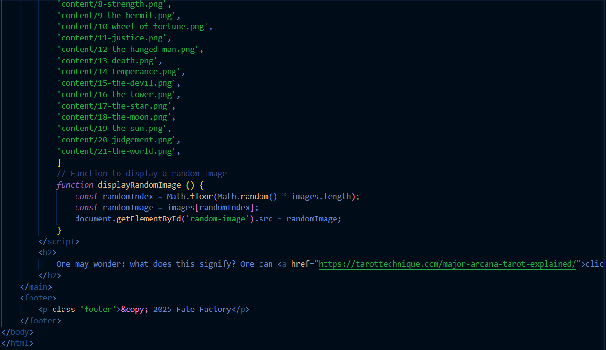
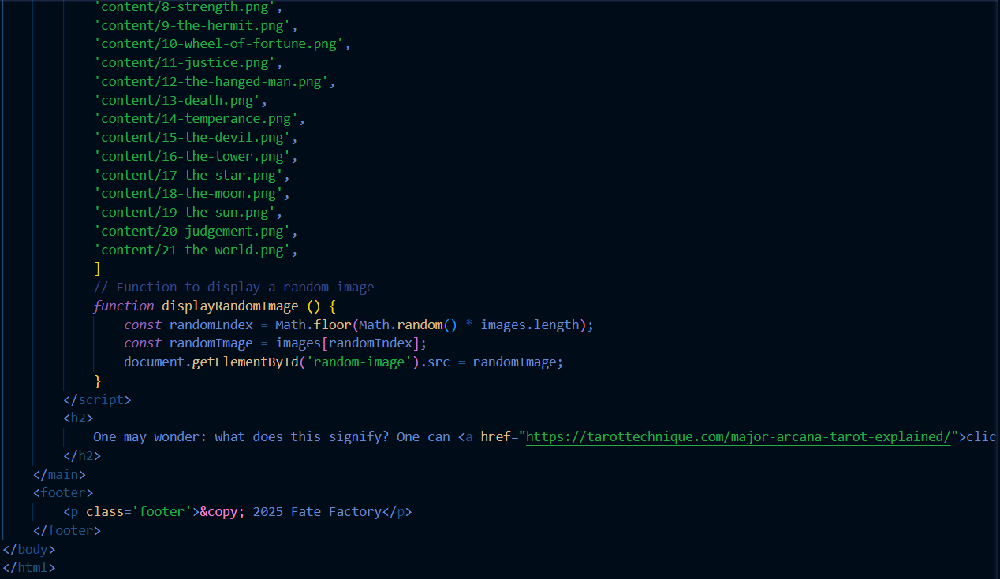

It's Raining, c'est un projet de jeu vidéo en 2d, pixelisé, fait sur Unity 2d en C#. Ce projet, c'est tout d'abord une opptortunité de diversifié les langages de programmation que je maitrise, mais aussi d'étendre l'éventail de mes compétences; en effet je réalise non seulement le code du jeu, mais aussi les graphismes, les animation, l'écriture... Je travail actuellement sur la démo, qui sera assez courte car son objectif reste de me familiariser à des concepts nouveaux pour moi.
 



J'ai commencé par me familiariser avec l'interface d'Unity, et j'ai suivi les classes proposées par l'application, afin de maitriser les bases de l'interface et du C#. J'ai aussi travaillé en amont sur l'écriture, la direction artistique, et les brouillons des décors et des personnages.
Je vais ensuite commencer à mettre en forme la démo, en premier l'aspect graphique, ensuite le code et les animations.